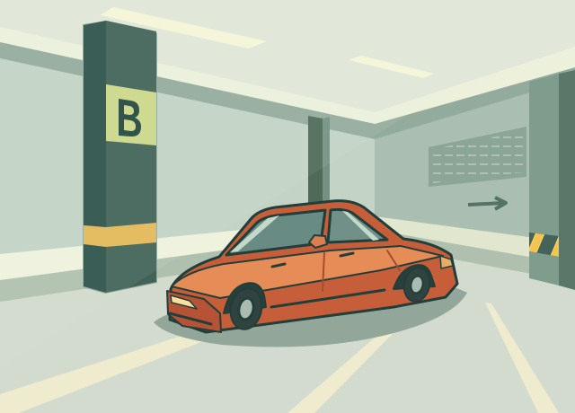

iPhone + Apple Watch
Recuerda dónde has aparcado.
Guarda el punto en el mapa, haz una foto del cartel de la planta y anota la fila. Cuando quieras volver al coche, abre MemoPark.
Ver en el App Store
Cómo funciona
De aparcar a volver al coche.
Guarda la ubicación
Toca el botón para guardar tu posición. Si hay poca señal GPS en el garaje, guarda el punto en la entrada mientras tengas cobertura GPS.
Recuerda los detalles
Haz una foto del cartel de la planta o añade una nota: «Planta −2, fila C, junto a los ascensores».
Vuelve a pie
Abre el punto guardado y consulta la foto o la nota. Pide indicaciones a pie en Apple Maps o en Google Maps, si lo tienes instalado.
Un poco más fácil
¿Habéis quedado en el coche?
Comparte la ubicación para que la otra persona pueda abrirla en el mapa sin instalar MemoPark. También puedes guardar o consultar dónde has aparcado desde tu Apple Watch.
Descargar MemoPark